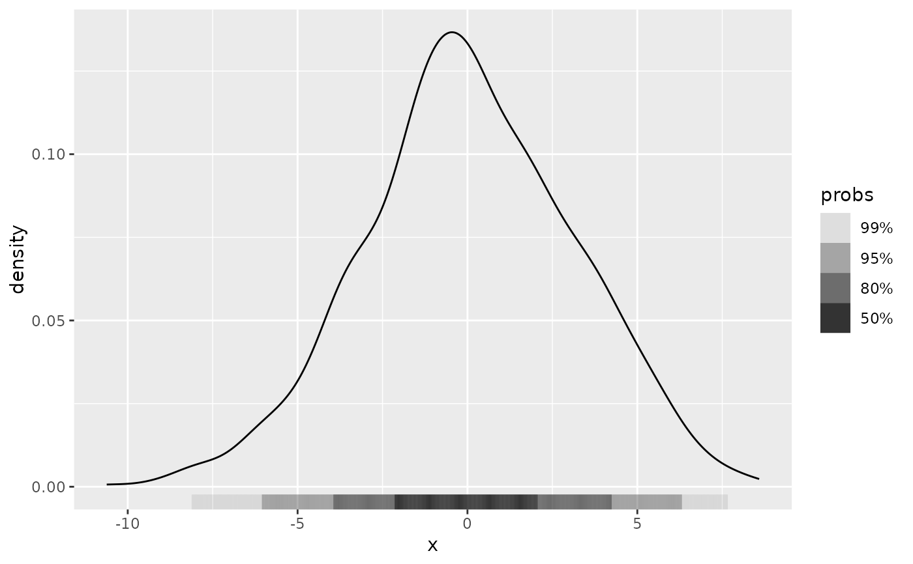
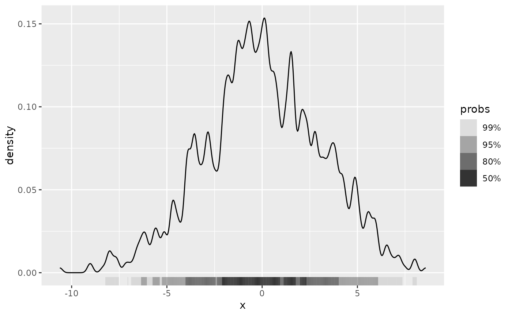
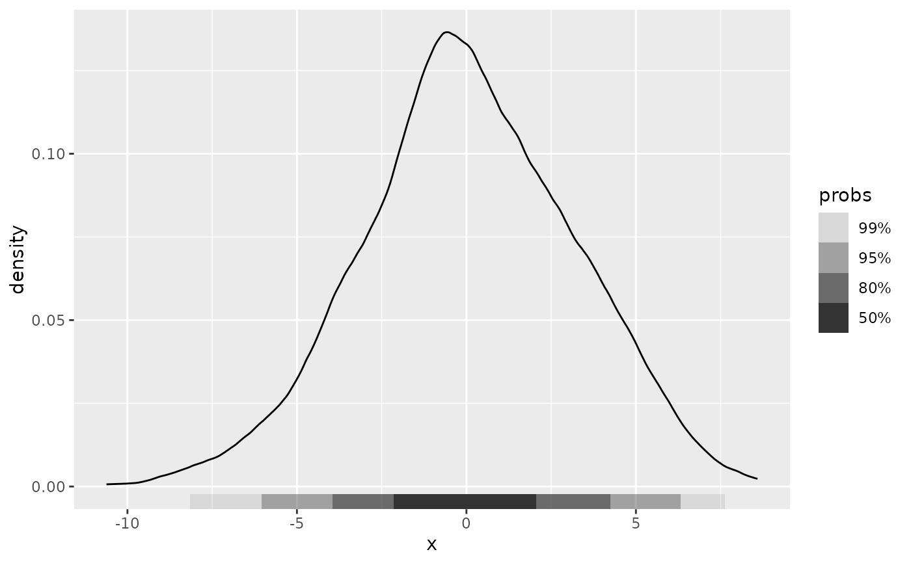

Function used to specify univariate kernel density estimator
for get_hdr_1d() and layer functions (e.g. geom_hdr_rug()).
Usage
method_kde_1d(
bw = "nrd0",
adjust = 1,
kernel = "gaussian",
weights = NULL,
window = kernel
)Arguments
- bw
the smoothing bandwidth to be used. The kernels are scaled such that this is the standard deviation of the smoothing kernel. (Note this differs from the reference books cited below, and from S-PLUS.)
bwcan also be a character string giving a rule to choose the bandwidth. Seebw.nrd.
The default,"nrd0", has remained the default for historical and compatibility reasons, rather than as a general recommendation, where e.g.,"SJ"would rather fit, see also Venables and Ripley (2002).The specified (or computed) value of
bwis multiplied byadjust.- adjust
the bandwidth used is actually
adjust*bw. This makes it easy to specify values like ‘half the default’ bandwidth.- kernel, window
a character string giving the smoothing kernel to be used. This must partially match one of
"gaussian","rectangular","triangular","epanechnikov","biweight","cosine"or"optcosine", with default"gaussian", and may be abbreviated to a unique prefix (single letter)."cosine"is smoother than"optcosine", which is the usual ‘cosine’ kernel in the literature and almost MSE-efficient. However,"cosine"is the version used by S.- weights
numeric vector of non-negative observation weights, hence of same length as
x. The defaultNULLis equivalent toweights = rep(1/nx, nx)wherenxis the length of (the finite entries of)x[]. Ifna.rm = TRUEand there areNA's inx, they and the corresponding weights are removed before computations. In that case, when the original weights have summed to one, they are re-scaled to keep doing so.
Details
For more details on the use and implementation of the method_*_1d() functions,
see vignette("method", "ggdensity").
Examples
df <- data.frame(x = rnorm(1e3, sd = 3))
ggplot(df, aes(x)) +
geom_hdr_rug(method = method_kde_1d()) +
geom_density()

# Details of the KDE can be adjusted with arguments to `method_kde_1d()`
ggplot(df, aes(x)) +
geom_hdr_rug(method = method_kde_1d(adjust = 1/5)) +
geom_density(adjust = 1/5)

ggplot(df, aes(x)) +
geom_hdr_rug(method = method_kde_1d(kernel = "triangular")) +
geom_density(kernel = "triangular")

# Can also be used with `get_hdr_1d()` for numerical summary of HDRs
res <- get_hdr_1d(df$x, method = method_kde_1d())
str(res)
#> List of 3
#> $ df_est:'data.frame': 512 obs. of 4 variables:
#> ..$ x : num [1:512] -10.6 -10.6 -10.5 -10.5 -10.5 ...
#> ..$ fhat : num [1:512] 0.000667 0.000677 0.000687 0.000697 0.000706 ...
#> ..$ fhat_discretized: num [1:512] 2.51e-05 2.55e-05 2.59e-05 2.62e-05 2.66e-05 ...
#> ..$ hdr : num [1:512] 1 1 1 1 1 1 1 1 1 1 ...
#> $ breaks: Named num [1:5] 0.00617 0.01971 0.05701 0.09484 Inf
#> ..- attr(*, "names")= chr [1:5] "99%" "95%" "80%" "50%" ...
#> $ data :'data.frame': 1000 obs. of 2 variables:
#> ..$ x : num [1:1000] -5.767 4.859 1.558 -0.168 2.089 ...
#> ..$ hdr_membership: num [1:1000] 0.95 0.95 0.5 0.5 0.8 0.5 0.8 0.99 0.5 0.5 ...